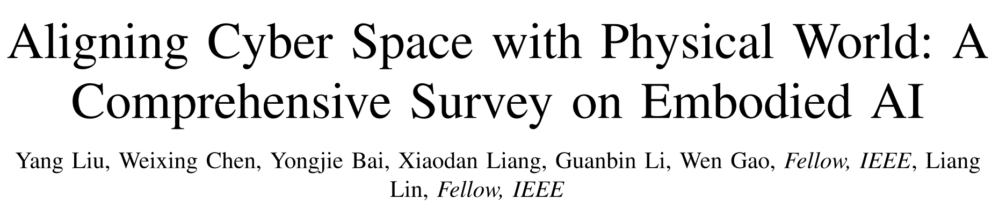
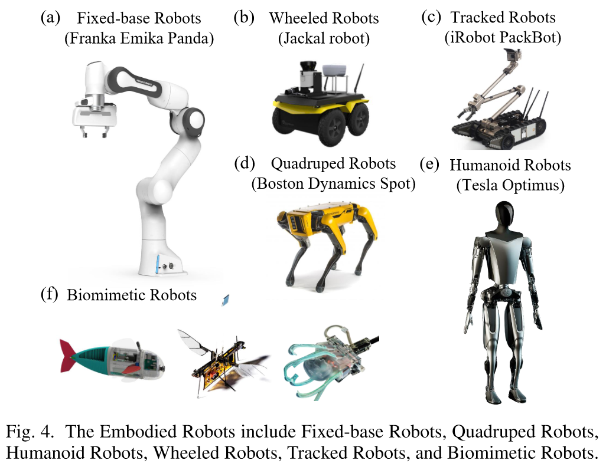

挑战一周速成具身智能基础知识。—— 失败了。
这是 2024 年 7 月中山大学和鹏城实验室联合发布的一篇多模态大模型 (MLMs) 及世界模型 (WMs) 时代的具身智能综述的论文总结。

# TL;DR
文章的主要内容和贡献包括：
- 分析了具身智能的四个主要研究目标
- 具身感知 (embodied perception)
- 具身交互 (embodied interaction)
- 具身智能体 (embodied agent)
- 虚拟到现实的适应 (sim2real adaptation)
- 探讨了虚拟世界和真实世界之间 MLM 的复杂性
- 总结了具身智能现有的挑战和未来的发展方向
# 具身机器人分类

# 固定基座机器人
固定基座机器人 (fixed-base robots) 由于其紧凑和高精度操作的特点，已经在实验室自动化、教育培训和工业制造领域得到广泛使用。其另一重要特点是具有高度可编程性。但由于固定底座设计限制了移动的自由，因此固定基座机器人通常与人类或者其它机器人配合工作。
# 轮式和履带式机器人
轮式机器人 (wheeled robots) 是一种常见的移动机器人，在配备传感器的情况下可以实现自主导航和环境感知。其优点包括结构简单、成本较低、能源效率高以及可以快速移动。其缺点是在复杂地形和恶劣环境下移动性有限，且负载能力有限。其主要应用于仓储物流和安检领域。
履带式机器人 (tracked robots) 有更强的越野能力和机动性，在农业、救援和军事领域应用广泛，但其能源效率相对轮式机器人较低。
# 四足机器人
四足机器人 (quadruped robots) 得益于其多关节控制，具有高稳定性和适应性，适用于救援和军事应用。其缺点是设计复杂、制作成本高昂，且能源利用率低下。
# 人形机器人
人形机器人 (humanoid robots) 一般具有类似人类的外形和灵巧的手部设计，这使得其可以执行复杂的任务。目前，人形机器人在服务业、医疗保健业和人机协作环境中应用不断扩大。
# 仿生机器人
仿生机器人 (biomimetic robots) 通过模仿自然界生物的高效运动方式和能力，实现对复杂和动态环境的适应，其主要包括类鱼机器人 (fish-like robots)、类昆虫机器人 (insect-like robots) 和软体机器人 (soft-bodied robots) 等。目前，仿生机器人设计和制造工艺复杂，成本高昂，大规模生产和应用受到限制。此外，由于对柔性材料的使用，其在极端情况下的耐用性和可靠性有限。
# 具身模拟器
具身模拟器 (embodied simulator) 是在虚拟空间进行具身机器人测试模拟的载体，其通过模拟实现具身机器人的高效、安全测试。但由于模拟空间与现实空间存在差异，因此具身模拟器的目标之一就是缩小虚拟与现实之间的差异。
# 通用模拟器
# 具身感知
具身感知的要求不仅仅是识别图像中的物体，还需要在机器人本身移动过程理解场景的三维关系，并基于视觉信息预测和推理，以执行复杂任务。文章认为，具身感知发展的未来方向是以具身智能体为核心的视觉推理和社会智能。
# 主动视觉感知
就是 SLAM 那些。
# 3D 视觉定位
主要任务是基于自然语言描述实现 3D 场景中的定位。
# 视觉语言导航
视觉语言导航 (visual language navigation, VLN) 即使具身智能体依靠语言指令在不可见的环境中导航。
# 无视觉感知：触觉
# 具身交互
# 具身问答
# 具身抓取
# 具身智能体
# 具身多模态基础模型
# 虚拟到现实的适应
# 具身世界模型
# 数据收集和训练
# 具身控制
# 单模型泛化 (All Robots in One)
# 挑战与未来
# Ref
- Aligning Cyber Space with Physical World: A Comprehensive Survey on Embodied AI: 这是 2024 年 7 月中山大学和鹏城实验室联合发布的一篇多模态大模型 (MLMs) 及世界模型 (WMs) 时代的具身智能综述。